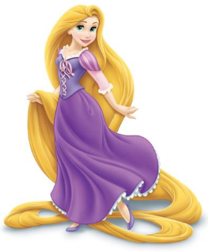

A história
Rapunzel era uma jovem muito bonita que vivia presa em uma torre alta, onde não existiam portas nem escadas. Ela tinha cabelos longos e dourados, que chegavam até o chão. Uma bruxa chamada Gothel cuidava de Rapunzel e não deixava que ela saísse da torre, pois queria mantê-la longe de outras pessoas. Todos os dias, Rapunzel passava seu tempo cantando, lendo e olhando pela janela. Ela tinha muita vontade de conhecer o mundo e descobrir o que existia além da torre. Certo dia, um príncipe passou perto da torre e ouviu Rapunzel cantando. Ele ficou curioso e descobriu que a bruxa usava os longos cabelos da jovem para entrar na torre. O príncipe esperou a bruxa ir embora e chamou Rapunzel. Assim, os dois começaram a se conhecer e se tornaram amigos. Com o tempo, Rapunzel e o príncipe se apaixonaram e decidiram encontrar uma maneira de fugir da torre. Depois de enfrentarem algumas dificuldades, Rapunzel conseguiu finalmente ser livre. No final, ela deixou a torre e começou uma nova vida ao lado do príncipe, vivendo muitas aventuras e sendo feliz.
